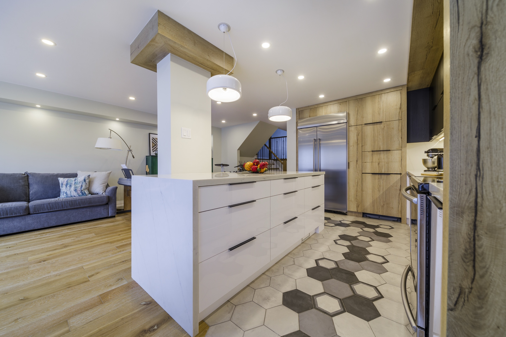
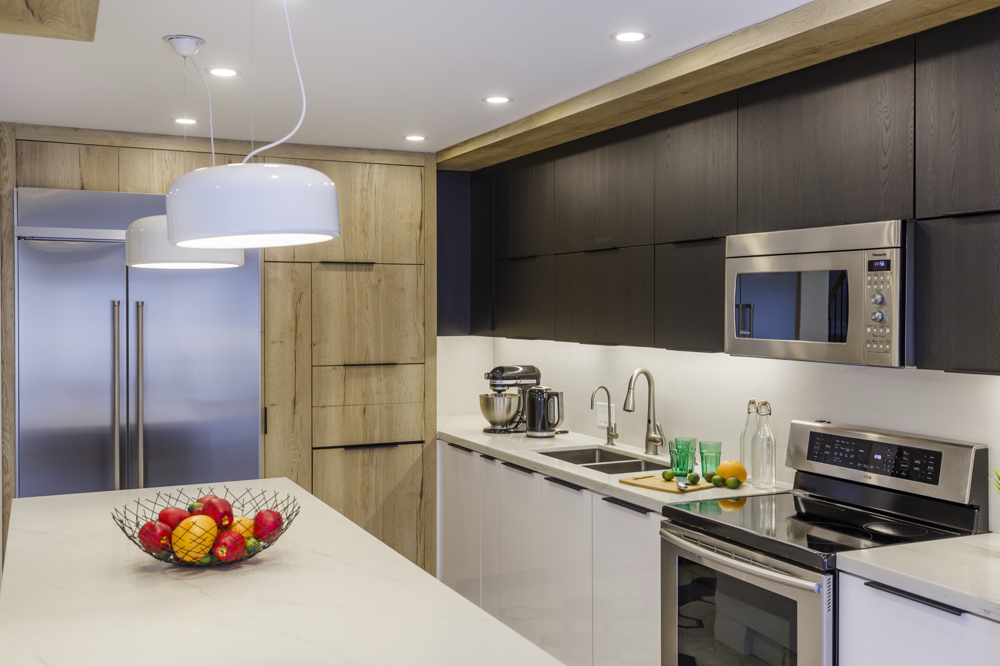
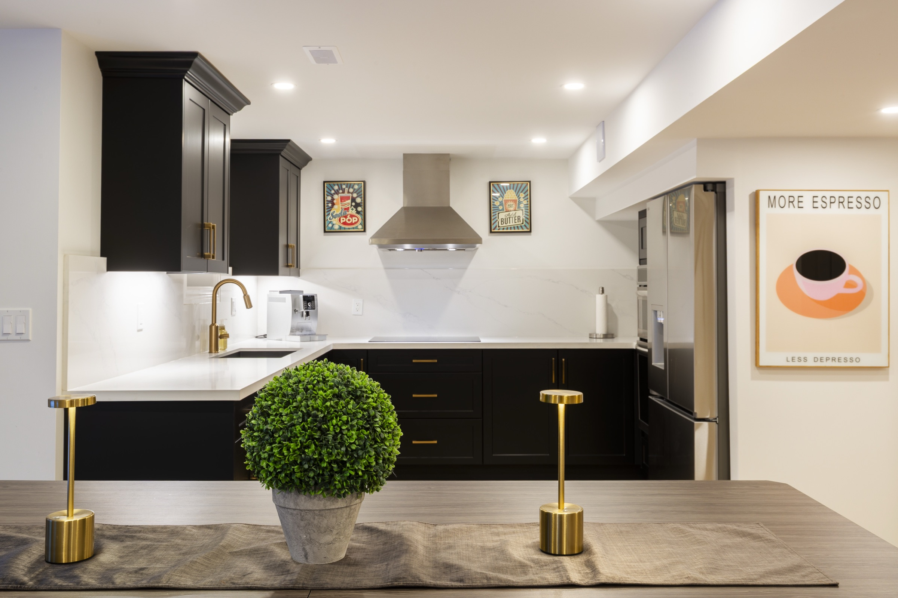
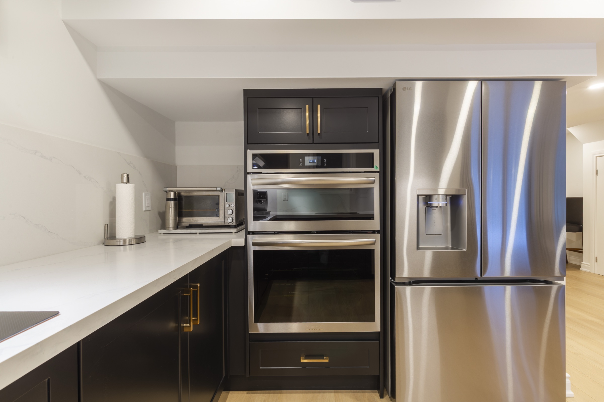
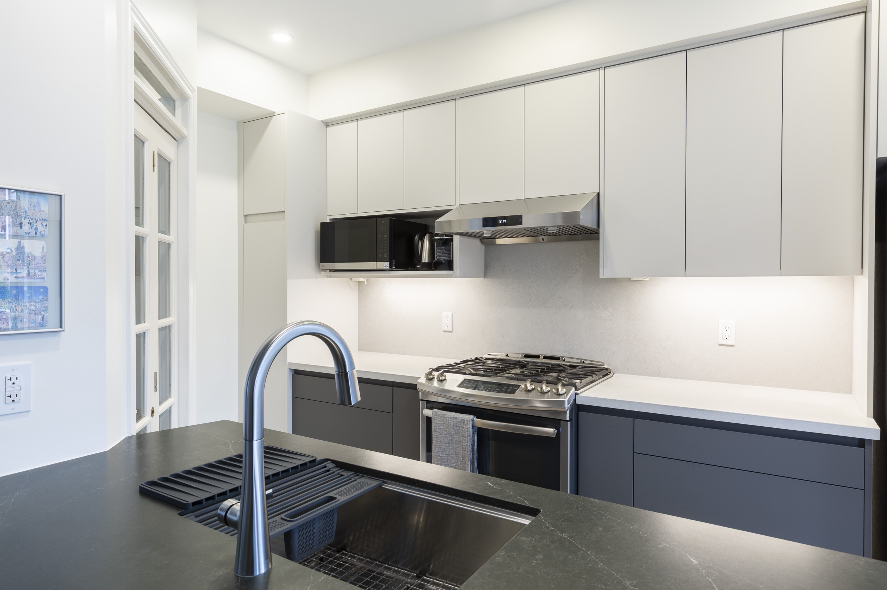
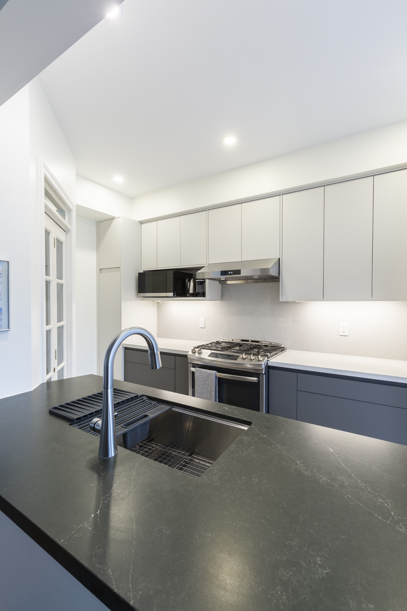
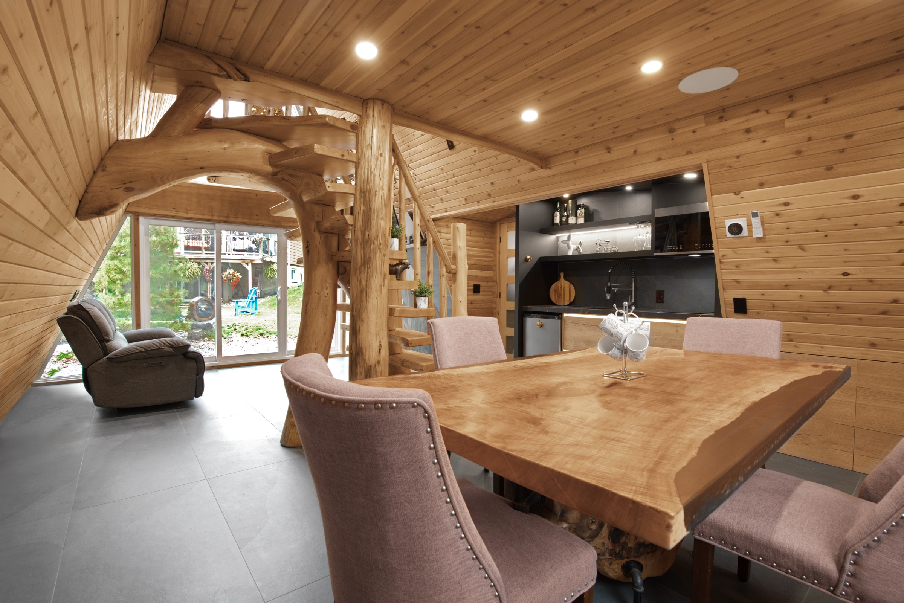
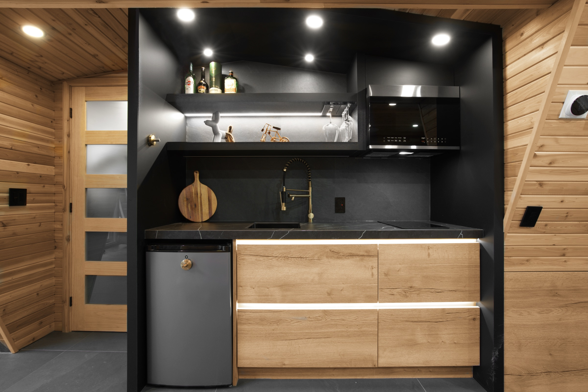

See the complete room.
Full-room views reveal circulation, island proportion, appliance placement, light, and the relationship to adjoining spaces.
Completed Kitchens · Toronto & GTA
Projects show how proportion, storage, light, materials, openings, and the relationship to the home change every kitchen more clearly than a model name ever could.
Discuss a similar project
A useful project story shows the room, the visible design decisions, the details behind the cabinetry, and the way the kitchen meets the home. It gives you evidence to judge—not a style package to copy.
Full-room views reveal circulation, island proportion, appliance placement, light, and the relationship to adjoining spaces.
Detail views show openings, profiles, interiors, junctions, surfaces, hardware, light, and the precision of the final fit.
A long Toronto room, a compact plan, a high roofline, dark cabinetry, or a warm material story each asks for a different answer.
Completed project proof
These are completed kitchens from the Capable team behind Mariani. The notes describe only what can be seen: the room, the fitted composition, and the design decisions visible in the photographs.
A long island and pale framed cabinetry organize the centre of a bright room, while the working elevation keeps the tall elements together.

Dark cabinetry and warm timber form a strong kitchen inside an open room; the close view shows how the surface, front, and hardware meet.


Deep framed colour and warm hardware create a deliberate rhythm across the fitted elevations and the island.


Slab fronts and integrated openings allow a long bank of cabinetry to read as one quiet fitted wall.


Black cabinetry and pale surfaces are fitted beneath the strong timber geometry of an A-frame room.


Warm timber, pale cabinetry, and stone connect the kitchen composition to the adjoining room.


Your home is the next context
A saved room, material, island, storage idea, or detail is enough to begin a more specific conversation about your home.